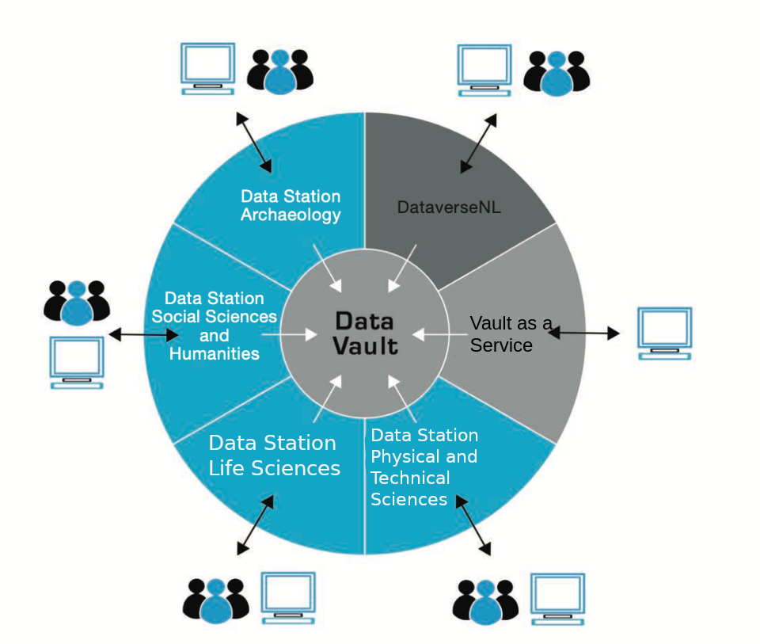

Core Services¶
Overview¶
The DANS Core Services are centered around the concept of a Data Station. A Data Station is a repository system that is used for depositing, curating and disseminating datasets, as well as creating long-term preservation copies of those datasets. These long-term preservation copies are stored in the DANS Data Vault.
The following diagram gives a high-level overview:

Data Stations¶
Each Data Station targets a part of the scientific research community. There is a Data Station for each of the following community domains:
The Data Stations use Dataverse as their repository system. Dataverse is an open source repository system developed by Harvard University. The Data Stations create a long-term preservation copy of each dataset in the DANS Data Vault.
Other services¶
The Data Stations are trusted repositories (some are still in the process of being certified). They are displayed as blue slices in the diagram. The grey slices are not Data Stations, as they are not in themselves full trusted repositories. In the technical architecture, however, they are described as variations on the Data Station architecture, as they are built using mostly the same components.
DataverseNL¶
DataverseNL is a Dataverse installation that offers deposit and dissemination services. Datasets stored in DataverseNL are also preserved in the DANS Data Vault. However, curation of the datasets is the responsibility of the DataverseNL customer.
Vault as a Service¶
Vault as a Service offers an interface for automated deposit of datasets directly into the DANS Data Vault. This service can be used as a building block in a customer's own archival workflow.
Interfaces¶
The services have interfaces for human as well as machine use. This is represented in the diagram by the people and computer icons. See for more information under External interfaces.